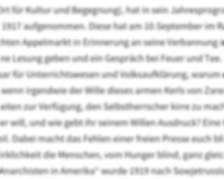

100 Jahre

100 Jahre nach der Oktoberrevolution
Der gemeinnützige Verein „Kultur-Transit 96 e.V.“ auf Burg Klempenow (Ort für Kultur und Begegnung), hat in sein Jahresprogramm eine öffentliche Informaions- und Diskussionsveranstaltung zum 100. Jahrestag der Oktoberrevolution von 1917 aufgenommen. Diese hat am 10.September im Rahmen einer Ausstellung zu Korolenko und seinem Wirken stattgefunden. Am 7. Oktober wird auf dem gut besuchten Appelmarkt in Erinnerung an seine Verbannung in Sibierien eine Jurte aufgestellt. Gefördert durch „Stiftung Aufarbeitung der SED Diktatur“ wird es darin eine Lesung geben und ein Gespräch bei Feuer und Tee. Korolenko schrieb 1920 sechs Briefe an Lunatscharski, den Volkskommissar für Unterrichtswesen und Volksaufklärung, warum die Revolution scheitern wird: „Vormals hieß es, Russland werde autokratisch vom Willen des Zaren regiert. Doch wenn irgendwie der Wille dieses armen Kerls von Zaren nicht ganz mit den Absichten der herrschenden Bürokratie übereinstimmte, standen der tausend Möglichkeiten zur Verfügung, den Selbstherrscher kirre zu machen. Geht es dem ebenso armen Kerl, dem jetzigen „Diktator“, nicht ganz ähnlich? Auf welche Weise erfahrt ihr, was er will, und wie gebt ihr seinem Willen Ausdruck? Eine freie Presse gibt es bei uns nicht, freie Wahlen auch nicht. Pressefreiheit ist für euch nur ein bürgerliches Vorurteil. Dabei macht das Fehlen einer freien Presse euch blind und taub für das wahre Leben. In euren offiziösen Blättern herrsch landesweit Wohlergehen, während in Wirklichkeit die Menschen, vom Hunger blind, ganz gleich wohin getrieben werden.“ Emma Goldman, für den ersten Direktor des FBI „eine der gefährlichsten Anarchisten in Amerika“ wurde 1919 nach Sowjetrussland ausgewiesen und erkannte dort nach einem Besuch bei Korelenko desillusioniert:„Das arme Russland muss für dieses Experiment teuer bezahlen. Es kann sogar für eine einsame Zeit grundlegende Veränderungen in anderen Ländern verzögern. Die Bourgeoisie wird in der Lage sein, ihre reaktionären Methoden zu verteidigen, indem sie darauf hinweisen, was in Rußland geschehen ist.“
(My Disillusionment in Russland / Emma Goldman 1925)